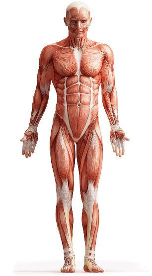
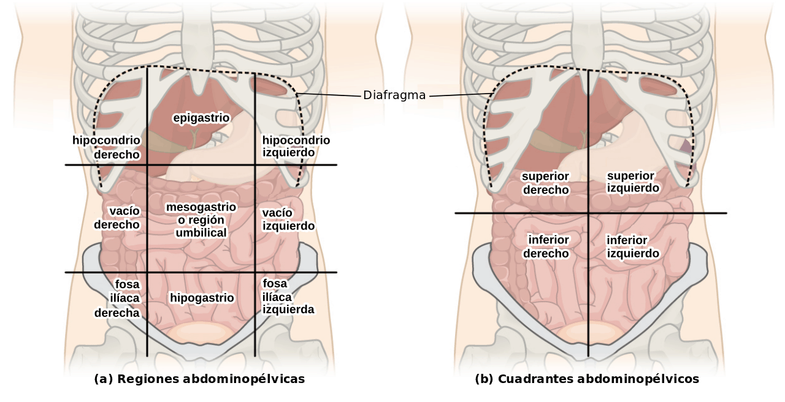

La Posición Anatómica Estándar
Para evitar confusiones, todas las descripciones se basan en una postura universal constante:
- Cuerpo erecto (de pie) mirando al frente.
- Brazos a los lados con las palmas hacia adelante (supinación).
- Pies juntos y paralelos.

1. Los cuatro Planos Imaginarios
Son cortes espaciales que dividen al cuerpo para facilitar su estudio:
Plano Sagital (Medio)
Divide el cuerpo en mitades derecha e izquierda.
Plano Coronal (Frontal)
Divide el cuerpo en partes anterior (frente) y posterior (espalda).
Plano Transversal (Horizontal)
Divide el cuerpo en partes superior e inferior.
eje longitudinal (vertical)
atraviesa de arriba hacia abajo permite movimiento de rotación.

2. Términos de Relación y Comparación
Adjetivos que indican la posición relativa de una estructura respecto a otra:
- Proximal / Distal: Más cerca o más lejos del tronco (usado en extremidades).
- Medial / Lateral: Más cerca o más lejos de la línea media.
- Superficial / Profundo: Según la cercanía a la superficie de la piel.
- Ipsilateral / Contralateral: Del mismo lado o del lado opuesto del cuerpo.


3. terminos de movimiento específicos
Más allá de la posición estática, la planimetría define cómo se mueven las estructuras:
- Flexión / Extensión: Disminución o aumento del ángulo entre huesos.
- Abducción / Aducción: Alejar o acercar una extremidad de la línea media.
- Supinación / Pronación: Rotación del antebrazo para que la palma mire hacia arriba o hacia abajo.
- Inversión / Eversión:Movimientos específicos del pie hacia adentro o hacia afuera.

Las Cavidades Corporales
La planimetría también nos ayuda a ubicar los grandes espacios donde se alojan los órganos:
- Cavidad Dorsal: Contiene la cavidad craneal y el conducto vertebral.
- Cavidad Ventral: Se divide por el diafragma en la Cavidad Torácica (pulmones, corazón) y la Cavidad Abdominopélvica (vísceras digestivas y reproductivas).

Cuadrantes y Regiones Abdominales
Para la práctica clínica, el abdomen se divide en 9 regiones (hipocondrios, epigastrio, flancos, mesogastrio, fosas iliacas y hipogastrio.) o 4 cuadrantes. Esto permite localizar dolores u órganos específicos de forma exacta.
